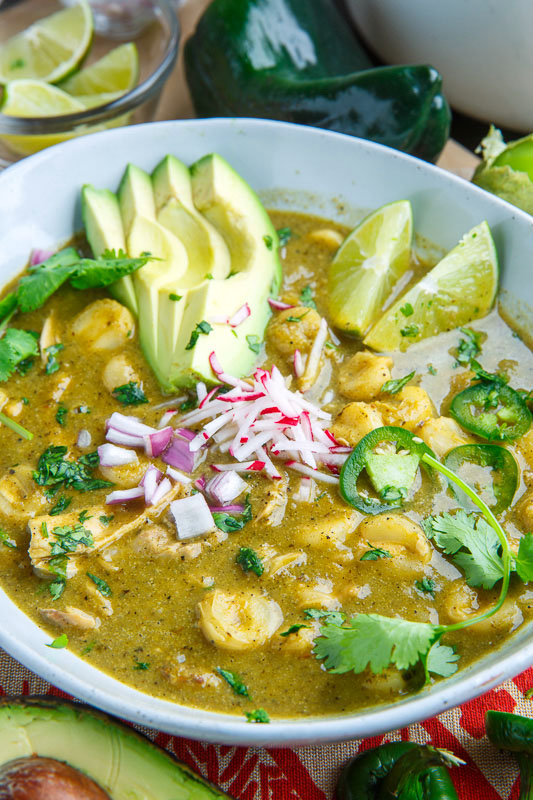

Pozole Verde

Description
"This authentic pork chile verde recipe will rival any you find in a Mexican restaurant!
Tender pieces of pork are slow cooked with a fantastic homemade green chile sauce
(salsa verde). Serve this delicious stew alongside warm tortillas."
It should be noted that while I am Latino, I am not much of a cook or
expert of Mexican cuisine. I have limited experience making Mexican food.
I am writing a recipe that I have used myself and is credited to the
Youtube channel
"Cooking Con Claudia". It turned out incredibly delicious and is perfect
for those cold winter days.
Her video recipe for Pozole Verde with pork is found
here. I am giving credit
where credit is due, and am simply writing out her instructions as text.
Ingredients
For the meat
- 5 lbs boneless pork shoulder butt roast
- 2 lbs pork country style ribs
- 14-16 cups of water
- 1/2 onion (other half is used for the sauce)
- 1 garlic head
- Salt to your liking (2 tbsp is standard)
- Fresh thyme, bay leaves, oregano
- 110 oz can of white hominy
For the sauce
- 4 anaheim peppers
- 2 poblano peppers
- 5 serrano peppers
- 14 tomatilos
- 1/2 of onion (unused portion from the meat)
- 4 garlic cloves
- 1 bunch of cilantro
- Spinach to your liking
- 2 bay leaves
- 2 tbsp chicken bouillon
- 1 tbsp oregano
- 2 tsp black pepper
- 1 tsp cumin
Garnishments (optional)
- serano peppers
- white onion
- green onion
- avocados
- radishes
- green cababge
- limes
Steps
- Fill a pot with 16 cups of water and set to medium high heat.
- Add 2 tbsp of salt, 1/2 onion, 1 garlic head,
about 2 sprigs of fresh thyme, 3 bay leaves,
and oregano to your liking.
- While waiting for water to come to a boil, cut meat into
bite-sized pieces. Once water is boiling, add in the meat.
- After boiling for 15 minutes, lower heat to medium-low heat.
Remove scum if desired.
- Cover pot with a lid and cook anywhere from 1 hour to 1 hour
and 15 minutes.
- While we wait for our meat to boil, we are going to make our sauce.
- Begin by roasting the peppers. You can either roast by stovetop or oven.
Roast on all sides until it is charred. Start with roasting the 4 anaheim
and 2 poblano peppers.
- Transfer to a large bowl and cover with aluminum foil. We want
them to sweat.
- Next, we will roast the 5 serrano peppers, 14 tomatillos, and the leftover
half of onion omitted from the boiling meat. Char them all.
- Transfer the serrrano peppers to the same bowl as the other peppers to also
sweat for about 10 minutes. Transfer the roasted onion and tomatillos to
a blender cup.
- After letting the peppers sweat, we are going to deseed them and remove the
stems.Then throw the peppers in the blender cup.
- While waiting for the broth to finish, open your can of white hominy and
give it a good rinse. Feel free to prepare your garnishments as well
(if any).
- When the broth is done cooking, take two cups of the broth, the 1/2 onion,
and the garlic head to blender cup.
- Also add to the blender cup: the remaining 1/2 an onion, 4 garlic cloves,
1 bunch cilantro, spinach, 2 bay leaves, 2 tbsp chicken bouillon,
1 tsp oregano, 1 tsp black pepper, 1 tsp cumin.
- Blend it all together until you have a smooth sauce.Then add more spinach
if desired and blend again.
- Fry your sauce with vegetable oil. Fry all of it on medium high heat and
bring to a simmer.
- Carefully pour your sauce in the pot with the broth.
- Take your can of white hominy and give it a good rinse, then add
to the pot. Cook for 30 minutes.
- Your pozole verde will be ready when your meat is tender.
- Serve and enjoy!